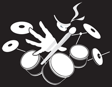

External Resources
|
 |
| ninjadrummist.com |
| While I selected the most important and widely used rudiments, Ninja Drummist is THE best place to learn ALL drumming rudiments that there is. I, myself, am a user of the ninja drummist encyclopedia. If you have would like to learn more rudiments, or get a second perspective on rudimental drumming overall, I encourage you to explore this wonderful website. |

|
| lefthandpathdrumbook.com |
| Carlos Botello is one of my favorite teachers as a rudimental drummist. Botello creates wonderful music and has inspired a lot of my personal composition and influence into snare drumming. His books are packed with knowledge and he provides plenty of play-alongs on his social medias. I highly recommend exploring his content and, if it interests you, purchasing some of his books - he has something for everyone! |

|
| tapspace.com |
| Tapspace is one of the leading online commerce platforms for percussion music. From solos to ensembles - drums to keys - it's all there! While it may be a bit pricey with some items, tapspace is a wonderful source that I personally have used for many of my performed pieces. I highly suggest using tapspace as a starting point of exploring outsourced music. |